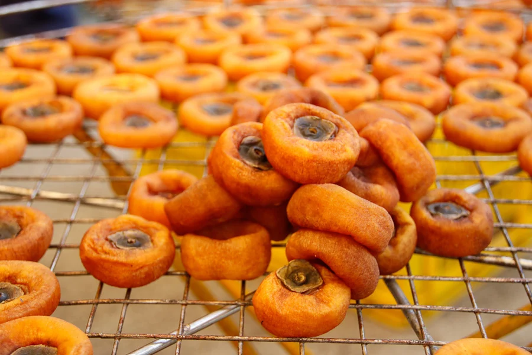

企劃動機
...
團隊介紹
黃彥維
電機工程&專案管理師
負責監管團隊進度、機電整合及文書處裡
湯忠叡
機械工程師
設計柿餅曬製機的外觀及機械構造
吳柏宏
軟體工程師
製作柿餅曬製機的模組
蕭培生
電機工程師
製作柿餅曬製機的移動及曬架控制
吳松諭
軟體工程師
設計操控及監控柿餅曬製機的APP
指導老師
廖經益 主任
圖書館主任
為團隊點出問題並輔助整個企畫構想的要素
我們提出了AIOT 柿餅曬製機製作的構想 ，希望北埔的姑婆有了這樣的機器，可以解決柿餅曬製人力的不足，保留原有日曬的文化景觀，傳承柿餅製造的技術，延續北埔珍貴的文化資產，在曬柿餅的淡季，柿餅曬制機擔任觀光代言成為表演的主力，讓外飄的青年有機會回到社區服務為文化保留善盡一份力，也讓科技融入社區創生，成為北埔社區發展觀光的一個亮點。
40% 社區創生
60% 觀光娛樂
90% 補充勞動力
70% 文化資產保留
CES 2020 - Samsung 推出全新 AI 人工智能機器人「Ballie」 在 2020 CES 大展上發佈了品牌最新研發的智能機器人，由 Samsung CEO H.S. Kim 正式揭露，一款外形類似網球，名為「Ballie」將搭載 Samsung 研發的 AI 人工智慧系統、攝像機、遠端監控並搭配手機 App 已完成對用戶「Understand, Support, and React」的產品理念。 記者會一開場，金玄石就說：「2020年是充滿可能性的一年，雖然我們還沒有飛天車，卻有許多科技上的新機會。」他進一步指出，根據內部調查，有高達74%的消費者，對於產品體驗特別在意，因此三星接下來的目標，是以人為核心，打造更個人化的產品。 從記者會所示範的功能來看，Ballie陪伴的功能似乎比較沒能被凸顯，反而比較像是讓Ballie，成為智慧家居中，控制家中IoT設備的指揮中心。
在柿餅製作的過程中，將柿子排在柿餅曬架上攤開來回拿去曬，需要更多的人力。因此「柿餅曬製機」的設計，必須能夠完整的執行這個步驟，流程包括：
得天獨厚的地理位置
季節特色
每年九月到隔年一月
也剛好是最好的曬製柿餅條件
客家人的食農教育與曬柿文化
農曆九月底， 為柿子成熟的時期， 許多柿農開始製作柿餅。 柿餅在製作的過程， 需要透過人工， 例如柿子採摘經過選果以後要去剝皮的前置作業， 接著讓其炭烤煙燻或者直接日曬或風吹的方式讓柿子乾燥， 再透過擠壓塑型， 並且重複曬乾大約持續六到八天， 及擠壓數次直到柿餅固定直到， 之後才可烘培殺菌密封。
（一）採摘
柿青通常要在柿子七到八分熟時採下， 9月下旬至11月下旬主要製作牛心柿柿餅， 而10月中旬至11月下旬主要製作石柿柿餅， 11月下旬至1月則是製作筆柿柿餅。
（二）選果
剔除畸形、病蟲害與過熟等， 挑出品質較好的柿子。 畸形與病蟲害的柿子會影響成品外型與色澤， 並且引響其品質， 過熟會導致製作時腐爛， 使良率降低。
（三）將果皮去除
將柿青削去其表皮， 方可以開始曬柿餅的製作。 先把柿青清乾淨， 並將其水分瀝乾， 早期是由有經驗的老師傅來手工削柿皮， 現在是使用自動削柿機來幫忙削柿， 因此省去了許多製作時所需的人力成本。 削去表皮時厚度需一致， 已讓柿餅風乾均勻， 並且皮削的越薄越好， 讓曬製時間能夠減少， 並且能夠曬得更平均。
（四）炭烤煙燻
相較未削皮的柿青， 微生物較容易污染經削皮過後的柿青， 而煤球燻蒸是一種有效防治的方法。 煤球燃燒後， 會因硫化物產生二氧化硫， 後產生亞硫酸， 擁有防止果肉氧化、柿青褐化反應等功用， 此可降低製作柿餅之失敗率， 提高成功率。
（五）日曬風乾
烤後之柿子排在竹篩上， 日曬風乾反覆數次。 直到表皮生成再生皮， 須注意避免過度曝曬， 萬一再生皮太厚， 將會影響果肉內部水分的滲透與蒸發。 在陽光充足的情況下約需日曬7到10天左右， 較大的柿子則約20天。 到了晚上或天氣不好時再推回倉儲空間。
（六）擠壓
受日曬後開始軟化， 則必須進行揉捏壓捏俗稱打手又稱按摩。 捏柿餅的作用是使柿餅皮與內層果肉因乾燥而產生之間隙得以消除， 同時壓捏可使各部分果肉水分均勻， 以及藉按摩促進糖轉化酵素之作用。 曬柿餅的過程要兩輪擠壓， 第一次按壓後的柿餅並未完全成型。 需要再次將擠過的柿子放回竹屜上曬制。 約八至十天後， 再依次擠壓一次（同第一次擠壓的手法一樣）。
（七）烘焙
烘焙其作用在於殺菌以及保護柿餅的色澤。 因為柿青含有許多的氧化酵素， 碰到空氣會發生氧化反應， 會使得柿餅表皮變質進而影響美觀， 為了抑制柿餅表皮氧化作用就必須要烘烤煙燻， 酵素使酵素被破壞， 來保持柿餅之色澤。
（八）密封
將曬製好的柿餅， 平均放入一個個的缸中， 接著將每個柿子裹上糖霜即可， 接著用保鮮膜封好缸口， 然後蓋上蓋子。
為什麼堅持曬製柿餅?
曬製柿餅的方式保留了柿子天然的風味， 也讓成型的柿餅更顯精緻， 當然在這過程中也要付出許多的人力跟心力。
使用傳統的柿餅烘烤機雖然能使產量大幅提高， 卻拉低了柿餅的品質。 不管柿餅的口感還是柿餅獨特的柿霜， 都是仰賴人長期培養的經驗去製作的， 而柿餅曬製機只是替代了曬製的動作， 傳統日曬法結合了科技與人的經驗， 實現了創生。
企劃動機
團隊介紹
負責監管團隊進度、機電整合及文書處裡
設計柿餅曬製機的外觀及機械構造
製作柿餅曬製機的模組
製作柿餅曬製機的移動及曬架控制
設計操控及監控柿餅曬製機的APP
指導老師
為團隊點出問題並輔助整個企畫構想的要素